音楽ジャンルルーツ辞典の使い方
「自分の好きな音楽って、どこから来たんだろう」—— そう思ったことはありませんか。
誰でも、聴く音楽は少し偏っています。日本で育てば J-POP やバラードが耳になじみ、 海外のものはロックばかり、というように。それは悪いことではありません。 ただ、そのすぐ隣に、まだ出会っていない「好きになるはずの音楽」があるとしたら、 もったいないと思いませんか。
この事典は、572のジャンルをつながりの地図にしたものです。 好きなジャンルをひとつ選ぶと、そこから枝が伸びます。 そのジャンルを生んだ親、そこから生まれた子、 影響を与え合った仲間。たどっていくうちに、 名前も知らなかったジャンルにぶつかります。試しに1曲聴いてみる。 ——「あ、これ好きかも」。
作者自身がそうでした。ロックのルーツをさかのぼり、 枝分かれの先を聴いていくうちに、まったく縁がないと思っていたトランスに行き着き、 それが自分の好みだと気づいたのです。名前だけ知っていて「よく分からない」で終わっていた音楽が、 ちゃんと自分の好きな音だった——そういう発見をしてほしくて、これを作りました。
ジャンルごとに代表曲がすぐ聴けます。 説明を読んでから聴いてもいいし、まず聴いてから説明を読んでもいい。 「この曲、何ジャンルなんだろう」を音から調べることもできます。
音楽の地図を、気の向くままに歩いてみてください。 寄り道の先に、次のお気に入りがあります。
画面の見方
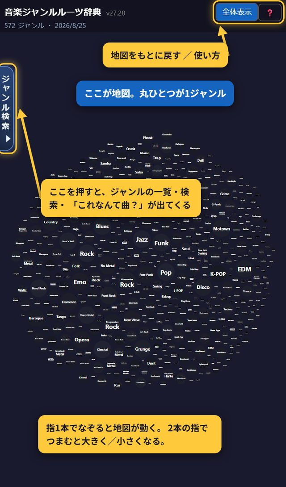
画面のほとんどが地図です。散らばっている丸ひとつひとつが、ひとつの音楽ジャンル。 572個の丸が並んでいます。
上の帯にあるもの
- 全体表示… 地図を最初の位置に戻します。動かしすぎて分からなくなったら、これを押してください
- ？… このページ（使い方ガイド）を開きます
- 2段目の「◯◯ ジャンル ・ 日付」は、いま載っているジャンルの数と、最後に更新した日です。ここがいつでも最新の数字です
指での動かし方
- 指1本でなぞる… 地図が動きます
- 2本の指でつまむ／広げる… 地図が小さく／大きくなります
- 丸を1回押す… そのジャンルの説明が開きます
スマホでは、丸をつかんで動かすことはできません。 指で広げて拡大しようとしたときに丸をつかんでしまい、地図がぐにゃぐにゃ動いてしまうためです。 パソコンでは今までどおりつかんで動かせます。
「ジャンル検索」のつまみ
スマホは画面が狭いので、ジャンルの一覧・検索・「これなんて曲？」は、ふだんしまってあります。 出すのが、画面の左はしにある「ジャンル検索」のつまみです。
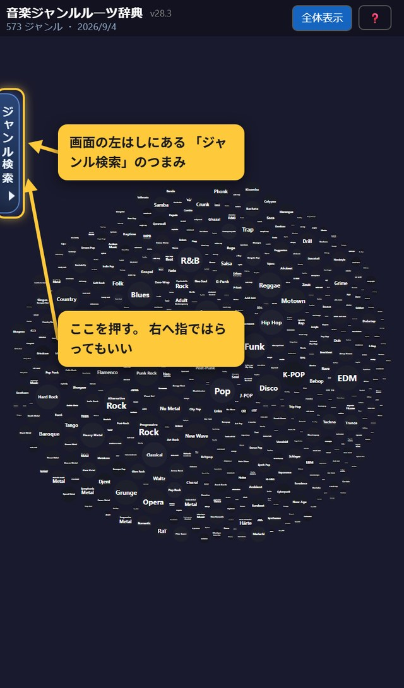
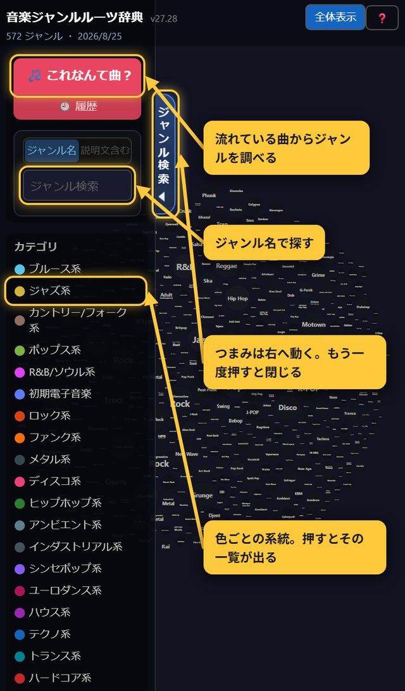
引き出しの中にあるもの
- 🎵 これなんて曲？… いま流れている曲を聴かせて、ジャンルを調べます（→ 7章）
- 🕘 履歴… これまでに調べた曲の一覧
- ジャンル検索の欄… ジャンル名で探します（→ 6章）
- カテゴリ… 「ブルース系」「ジャズ系」といった色ごとの系統。押すとその一覧が開きます
説明を読んでいる間は、細いつまみになります
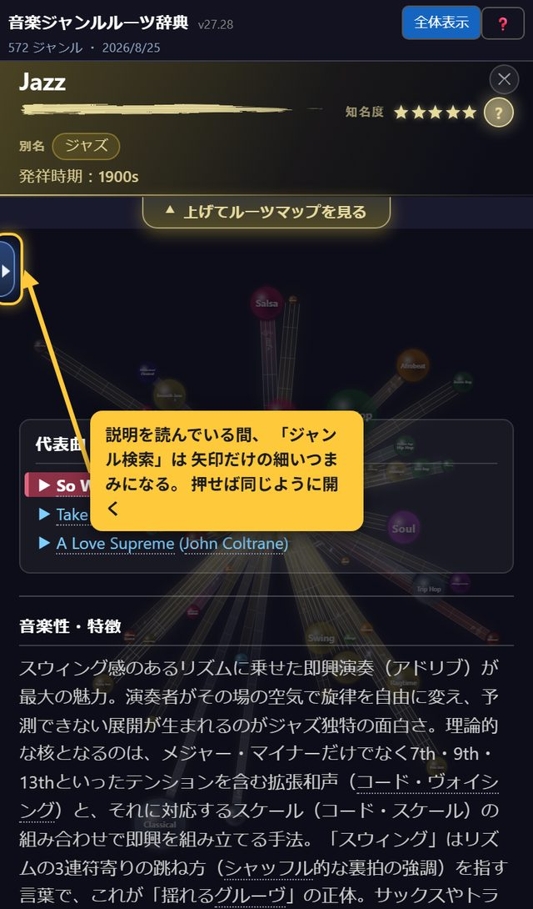
説明の文字と重ならないように細くしています。無くなったわけではありません。
ジャンルを開く
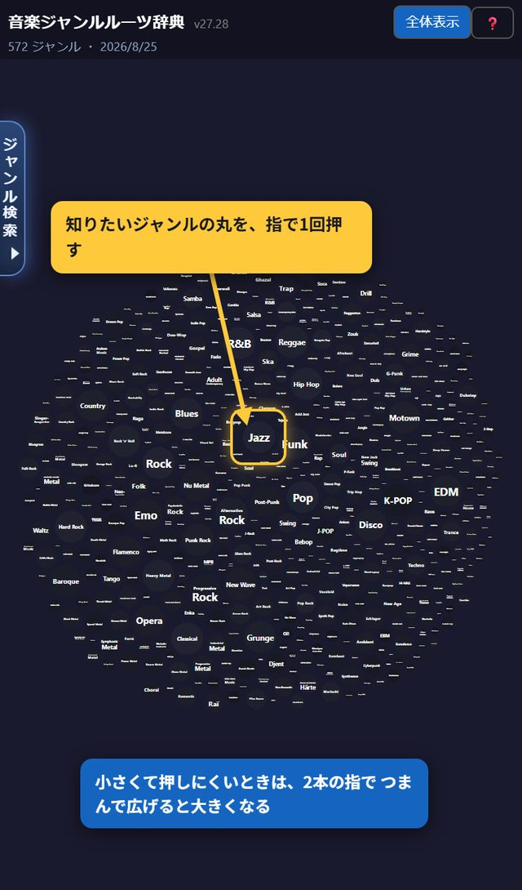
説明の画面と、上げ下げのつまみ
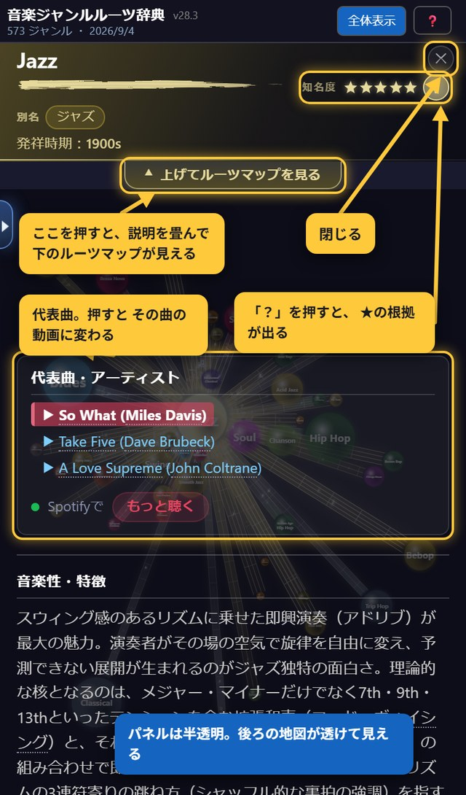
上のほうにあるもの
- ジャンル名と、その下の別名（同じジャンルの別の呼び方）
- 発祥時期
- 知名度 ★★★★★ … 世界でどれだけ知られているか。右の ？ を押すと、 何の数字を数えてその★になったかが出ます
- ✕ … 説明を閉じて地図に戻ります
下のほうにあるもの
- 動画 … 代表曲がその場で流れます（スマホでは、はじめの1回は自分で再生ボタンを押す必要があります）
- 代表曲・アーティスト … 曲名を押すと、その曲の動画に切り替わります
- 音楽性・特徴、生まれた背景 … 読みものです。指でなぞって下へ読み進めてください
- 影響を受けた／与えたジャンル … 名前を押すと、そのジャンルの説明に移ります
- ✎ このジャンルについて修正依頼 … 間違いを見つけたときに使います（→ 9章）
「上げてルーツマップを見る」のつまみ
説明の帯のすぐ下に、横長のつまみがあります。ここが、 説明と地図を行き来するためのスイッチです。三角がゆっくり点滅しています。
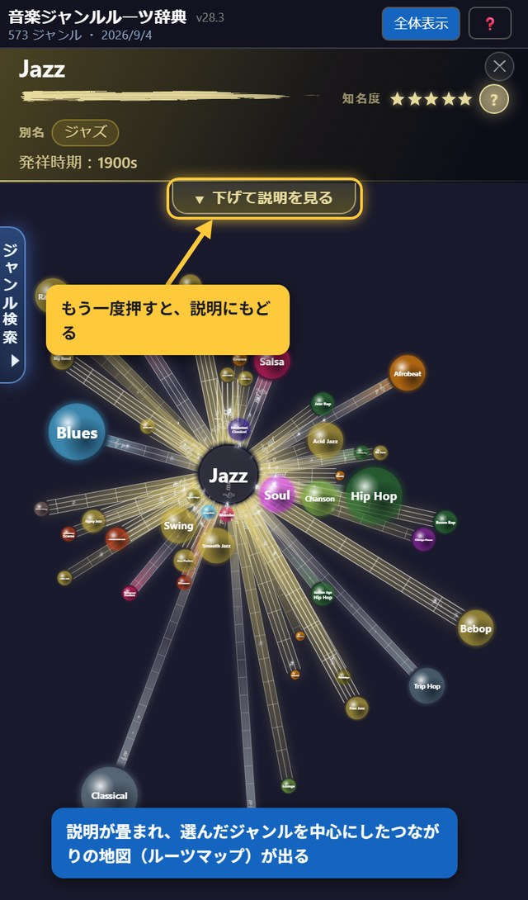
地図の読み方
丸の大きさ＝そのジャンルの知られ具合
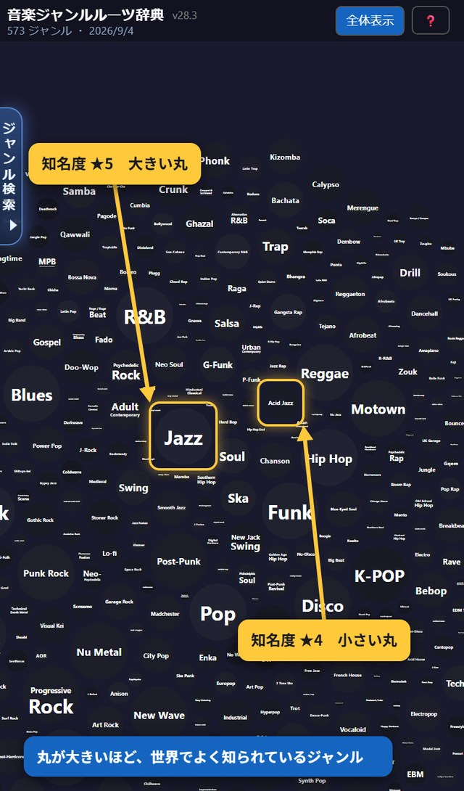
1段上がるごとに直径が約1.6倍（面積にすると約2.5倍）になります。 いちばん小さい★1といちばん大きい★5では、直径で約6倍のちがいです。 この大きさは感覚で決めたものではなく、公開されている3つのデータを数えて決めています （→ 知名度のしくみ）。
丸の色＝ジャンルの系統
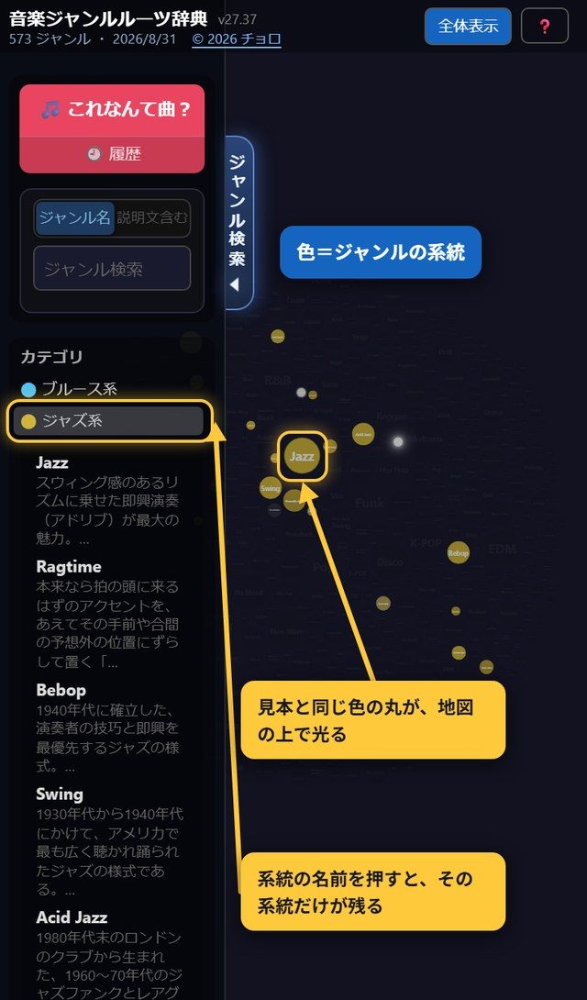
色は「ブルース系」「ジャズ系」「ロック系」といった系統を表します。 引き出しの中の「カテゴリ」に色の一覧があります。
線の太さ＝影響の強さ
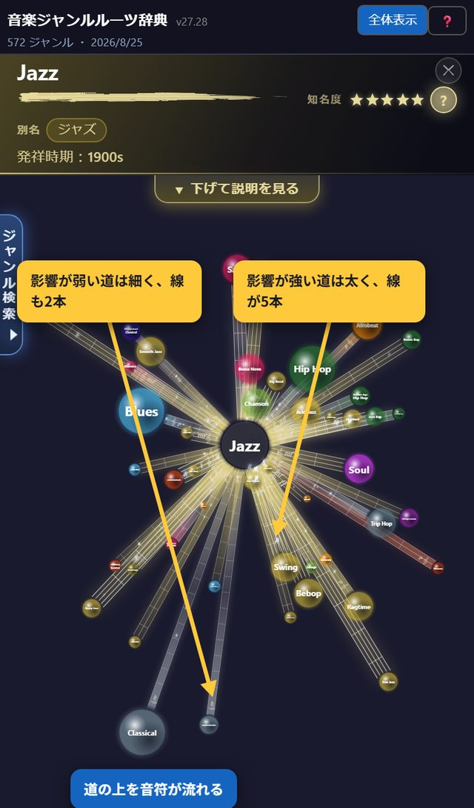
こちらも5段階で、5つの要素のうちいくつが受け継がれたかで決まります （→ 影響の強さのしくみ）。
系統ごとのジャンル一覧
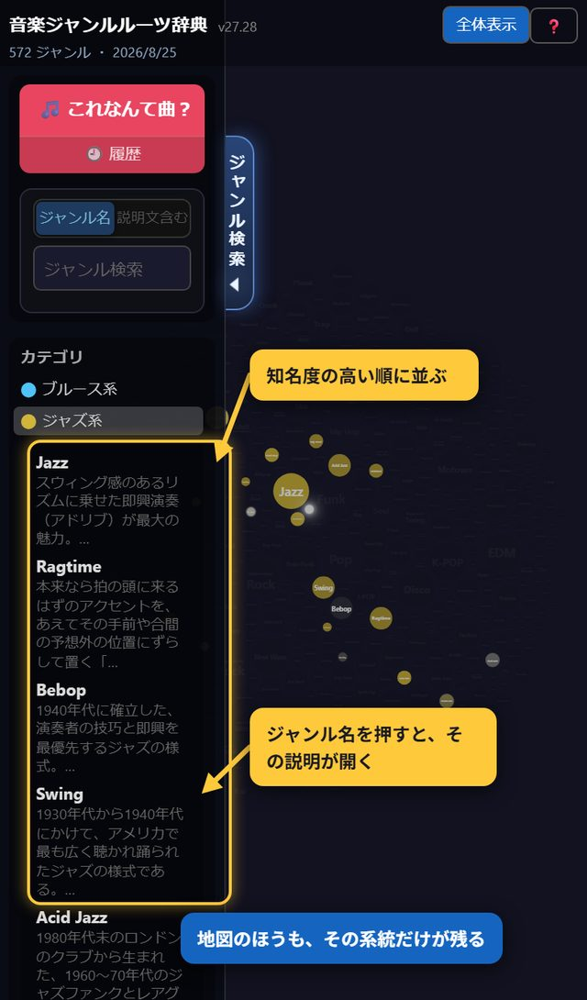
上から順に「その系統を代表するジャンル」が並ぶので、 知らない系統をのぞくときは、上から順に聴いてみるのがおすすめです。
ジャンルを探す
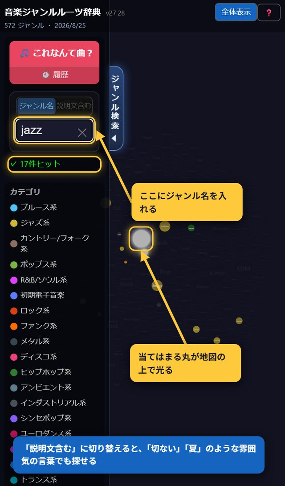
「これなんて曲？」で調べる
いま流れている曲や、持っている音源が何ジャンルなのか分からないとき、 聴かせるだけで調べられます。「ジャンル検索」の引き出しを開いて、 いちばん上の 🎵 これなんて曲？ を押します。
載っていないジャンルをリクエストする
検索や「これなんて曲？」で見つからなかったジャンルは、その場で追加をお願いできます。
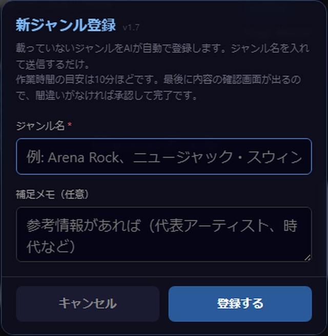
作られる情報が正しいかどうかは、次の順で確かめています。
- そのジャンルが実在するか調べます。実在が確認できないときは追加されません。 一方のAIが「無い」と判断しても、もう一方のAIがもう一度確かめます。 片方の思い違いで、実在するジャンルが弾かれてしまうのを防ぐためです。
- 書かれた内容の裏を取ります。人名・グループ名・レーベル名・曲名・年号などを、 Webを実際に検索して1つずつ確かめます。
- 代表曲の動画を確かめます。曲名と演奏者が動画の題名や投稿者名と合っているか、 日本で見られるか、カバーや解説動画ではないかを確かめます。
- 同じ曲が2つのジャンルに載らないようにします。
- 最後に人が確認して、承認したものだけが載ります。AIが作ったものをそのまま公開することはありません。
それでも誤りが残ることはあります。お気づきの点があれば、次の「間違いを見つけたら」から教えてください。
間違いを見つけたら
説明が事実と違う、代表曲の動画が別の曲になっている——そんな間違いに気づいたら、 ジャンルの説明をいちばん下まで読み進めたところにある ✎ このジャンルについて修正依頼 を押してください。
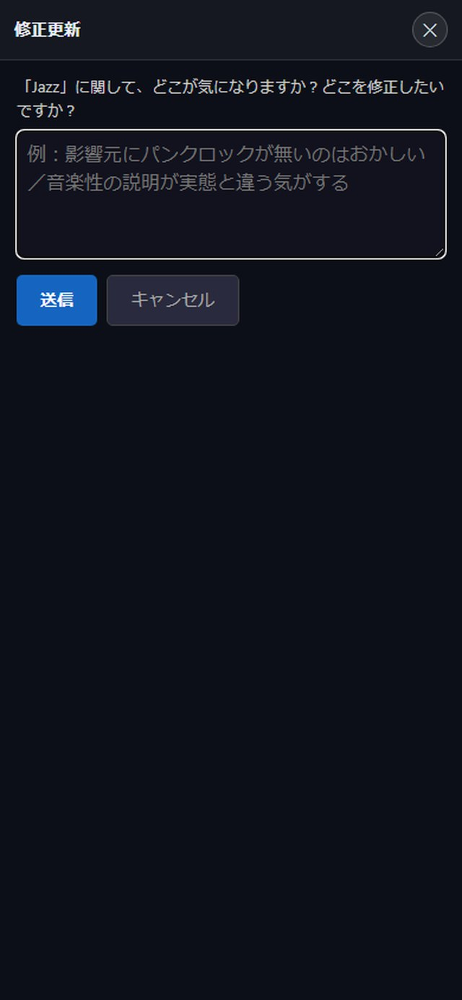
どんな些細な指摘でも大歓迎です。こうした指摘の積み重ねで、この辞典はより正確なものになっていきます。 やめたいときは、右上の ✕ でいつでも説明にもどれます。
ジャンルマップの見方

マップに散らばっている丸（ノード）ひとつひとつが、ひとつの音楽ジャンルです。 572個の丸が、全部そこに並んでいます。
ジャンルどうしのつながりは、全体の地図では線として出ていません。 1,600本以上あるので、全部いっぺんに出すと真っ白になってしまうからです。 丸をひとつクリックすると、そのジャンルにつながる相手だけが残り、 線（→ 五線譜の道）で結ばれます。
丸の大きさ＝そのジャンルの知られ具合

丸が大きいほど、世界でよく知られているジャンルです。5段階あり、 1段上がるごとに直径が約1.6倍（面積にすると約2.5倍）になります。 いちばん小さい★1といちばん大きい★5では、直径で約6倍のちがいがあります。 Jazz や Rock のような大物は大きく、ごく一部の人だけが知っているジャンルは小さくなります。 この大きさは感覚で決めたものではなく、公開されている3つのデータを数えて決めています（→ 知名度のしくみ）。
丸の色＝ジャンルの系統

色は「ブルース系」「ジャズ系」「ロック系」といった系統（カテゴリ）を表します。 画面左側に色の一覧があるので、どの色が何系かはそこで確認できます。 一覧の系統名をクリックすると、その系統のジャンルだけがマップ上で光ります。
線の太さ＝影響の強さ

ジャンルどうしをつなぐ線は、太いほど影響が強いことを表します。 こちらも5段階で、5つの要素のうちいくつが受け継がれたかで決まります（→ 影響の強さのしくみ）。
色の見本をクリック＝そのカテゴリのジャンル一覧
左側の色の見本（カテゴリ）をクリックすると、その系統に属するジャンルの一覧が開きます。 並び順は知名度の高い順なので、上から順に「その系統を代表するジャンル」が並びます。 一覧のジャンル名をクリックすると、そのジャンルの説明パネルが開きます。 地図のほうも、その系統のジャンルだけが色付きで残り、ほかは暗くなります。

説明パネルの見方

丸をクリックすると開く、右側のパネルの見方です。
もっと詳しく — 別名・知名度・影響の強さ・用語
ジャンル名の下の小さなタグ＝別名
同じジャンルが複数の呼ばれ方をしていることがあります。ジャンル名のすぐ下に、 その別の呼び名を小さなタグで並べています。
たとえば「グラムメタル」は「ヘアメタル」とも呼ばれます。 「ヘアメタル」で探してグラムメタルが出てきても、ここを見れば同じものだと分かります。
知名度（★）とそのしくみ
ジャンル名の右に 知名度 ★★★★☆ と星が出ます。 星の数が多いほど、世界でよく知られているジャンルです。マップの丸の大きさもこれで決まります。
この星は感覚で付けたものではありません。誰でも確認できる公開データを3つ数えて、 それぞれ1〜5点を付け、合計（3〜15点）から5段階を出しています。
- ウィキペディアの言語版の数… 何か国語で記事が書かれているか。歴史的な積み重ねを表します
- 年間の閲覧数… 主要12言語版の合計。いま関心を持たれているかを表します
- 代表曲の再生回数… YouTubeで実際に聴かれた量を表します
何点になるかの目安
| 点 | ウィキペディアの言語版 | 年間の閲覧数 | 代表曲の再生回数 |
|---|---|---|---|
| 5点 | 100か国語以上 | 60万回以上 | 5,000万回以上 |
| 4点 | 45〜99 | 25万〜60万回 | 1,000万〜5,000万回 |
| 3点 | 25〜44 | 10万〜25万回 | 200万〜1,000万回 |
| 2点 | 12〜24 | 3万〜10万回 | 30万〜200万回 |
| 1点 | 11以下 | 3万回未満 | 30万回未満 |
合計から★が決まる
| 3つの合計 | 知名度 | 例 |
|---|---|---|
| 14点以上 | ★★★★★ | Jazz、Rock、Pop、Hip Hop |
| 11〜13点 | ★★★★☆ | Bebop、Techno、Ragtime |
| 8〜10点 | ★★★☆☆ | Tech House、Afro House |
| 5〜7点 | ★★☆☆☆ | Detroit Techno、Acid Techno |
| 4点以下 | ★☆☆☆☆ | Skullstep、Deep Dubstep |
星の右にある ？ を押すと、そのジャンルの実際の数字と、それが何点になったかが出ます。 もう一度押すか、画面のどこかを押すと閉じます。
ウィキペディアに独立した記事が無いジャンルは、親ジャンルの数字を借りずに1点として数えています。 たとえば「Contemporary Blues」に Blues の閲覧数を当てると、Blues 自身と同じ点になってしまうためです。
影響の強さ（影響Lv）とそのしくみ
パネルの下のほうに、影響を受けた／与えたジャンルが並びます。 それぞれに 影響Lv 3 のような数字が付いています。
これは5つの要素のうち、いくつが受け継がれたかを数えたものです。
- リズム… 拍の取り方やノリ
- 和音… コードの進み方や響き
- 楽器… 使う楽器や音づくり
- 歌唱法… 歌い方・声の使い方
- 文化背景… どんな場所・人々から生まれたか
5つ全部を受け継いでいれば影響Lv 5、リズムだけなら影響Lv 1です。 どの要素が当てはまったかは、名前の下の5つの四角で分かります（光っているものが当てはまった要素）。 マップ上の線の太さも、この数字で変わります。
点線のついた言葉＝用語の説明
説明文の中に、下に点線がついた言葉があります。 そこにカーソルを合わせる（スマホでは軽く押す）と、その言葉の意味がふきだしで出ます。
「シンコペーション」「ペンタトニック」のような音楽用語だけでなく、 地名・人名・レーベル名なども説明しています。読みながら分からない言葉が出てきたら、 点線がついていないか探してみてください。
お問い合わせ
使い方が分からない、こうなったら嬉しい、うまく動かない――そうしたご連絡は、 お問い合わせフォームからお送りください。ひとつずつ読ませていただきます。
ジャンルの内容の間違いは9章の「修正依頼」から、 まだ載っていないジャンルの追加は8章のリクエストからのほうが早く反映されます。 それ以外のこと（使い方の質問、表示の不具合、ご感想など）は、こちらへどうぞ。
お名前とメールアドレスは任意です。お返事が必要な場合だけご記入ください。
ジャンルを探す

画面左側の検索欄にジャンル名を入力すると、マップ上で該当するジャンルが光ってハイライトされます。カンマ区切りで複数のジャンル名を一度に検索することもできます。
「これなんて曲？」で調べる
今流れている曲や、持っている音源が何ジャンルなのか分からないとき、聴かせるだけで調べられる機能です。左側の 🎵 これなんて曲？ ボタンから開きます。
載っていないジャンルをリクエストする
検索や「これなんて曲？」でヒットしなかったジャンルは、その場で追加をリクエストできます。リクエストされたジャンルは自動で情報が作成され、内容を確認したうえで辞典に追加されます（すぐには反映されないことがあります）。
作られる情報が正しいかどうかは、次の順で確かめています。
- そのジャンルが実在するか調べます。実在が確認できないときは追加されません。一方のAIが「無い」と判断しても、もう一方のAIがもう一度確かめます。片方の思い違いで、実在するジャンルが弾かれてしまうのを防ぐためです。
- 書かれた内容の裏を取ります。人名・グループ名・レーベル名・曲名・年号などを、Webを実際に検索して1つずつ確かめます。誤りが見つかった場合は、その場で書き直したうえで、何が誤りで、正しくは何で、根拠はどのページかを記録します。
- 代表曲の動画を確かめます。曲名で検索して出てきた動画を、そのまま載せることはしません。曲名と演奏者が動画の題名や投稿者名と合っているか、日本で見られるか、カバーや解説動画ではないかを確かめます。確かめられなかった曲は、無理に載せず外します。
- 同じ曲が2つのジャンルに載らないようにします。他のジャンルで既に代表曲になっている曲は使わず、新しく入るジャンルの側で別の曲を選び直します。ジャンルが違うのに同じ曲が並んでいると、間違いのように見えてしまうためです。
- 最後に人が確認して、承認したものだけが辞典に載ります。AIが作ったものをそのまま公開することはありません。
それでも誤りが残ることはあります。お気づきの点があれば、次の「間違いを見つけたら」から教えてください。
間違いを見つけたら
説明文が事実と違う、代表曲の動画が別のジャンルのものになっている、といった間違いに気づいたら、ジャンルの説明パネルにある ✎ このジャンルについて修正依頼 から教えてください。内容を確認したうえで、必要な修正が反映されます。
どんな些細な指摘でも大歓迎です。こうした指摘の積み重ねで、この辞典はより正確なものになっていきます。
お問い合わせ
使い方が分からない、こうなったら嬉しい、うまく動かない――そうしたご連絡は、お問い合わせフォームからお送りください。ひとつずつ読ませていただきます。
ジャンルの内容の間違いは前の章の「修正依頼」から、まだ載っていないジャンルの追加は地図の ＋ ジャンルをリクエスト からの方が早く反映されます。それ以外のこと（使い方の質問、表示の不具合、ご感想など）は、こちらへどうぞ。
お名前とメールアドレスは任意です。お返事が必要な場合だけご記入ください。